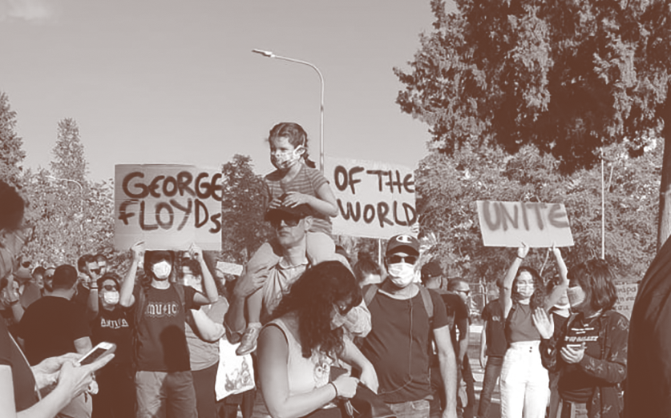

We came together as a response to the spiralling dehumanization of vulnerable communities. We are reclaiming the narrative of the politics we want to be part of. A safe space to collectively become assertive with care. Within each of our "Study Groups" we research, identify problems and design approaches to respond.
We are creating a safe environment for political curiosity and conversation. Our projects are called ‘Study Groups’ because we maintain the vulnerable and agile position of the learner. We invite and insist on creating conversation. Through conversation we want to organise and stay agile in response to systemic inequality, locally but not limited to Cyprus.
Currently conversations are our main focus as they make up our primary research to gain understanding. We are inviting informal conversation with people who a) have first hand experiences with the problem we are studying b) people who have direct contact with the social injustices we are studying and c) people who are studying these problems. We are all both students and teachers at the same time; a flat hierarchy of learning.
Right now we are branching out to understand 3 main topics.
These are our distinct Study Groups;
ONE: The structure of Pournara camp and how to aid people who were denied their access to basic human rights. TWO: The mechanics of racism in the Cypriot spoken language with all of its nuances. THREE: How to build a bridge with the artists scene in Lebanon suffering from the recent heartbreaking events in an attempt to relieve some pain.

READER
A collection of our Research matterial as well as a written archive of spoken-word.
01 — Table of Contents 02 — Branding Assets 03 — Objectives 04 — Diary of Actions 05 — Research
Categories of Research
05.1 — Pournara (Folder) 05.11 —— Resources 05.12 —— Interview: Charis Charalambidis 05.13 —— Research for Pournara
by Danae Alphas
05.2 — Lebanon (Folder) 05.21 —— Resources 05.22 —— Conversations with Rami 05.23 —— Lebanon Study Group Journal
With Lebanon Study Group Guide: Rami El Sabbagh
And also Sound designer of Erased__Ascent of the Invisible
We are figuring out how to build a bridge with the artist’s scene in Lebanon. Starting from the docu night screening we are opening up the conversation with you, our allies, to gather resources and start building.
Anyone with knowledge and will, we want you to be part of this.